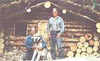
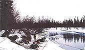
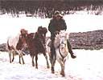
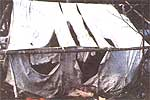
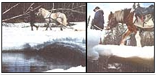
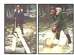
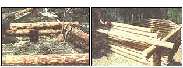
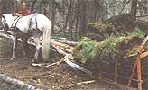
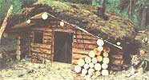
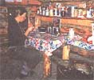

HOMESTEADING
Maintaining a trapline over hundreds of miles of the shifting ice and bitter winds of the Alaskan bush is just part of life for the Collins sisters. In their second report, Miki and Julie describe how necessity really is the mother of invention as they take a crash course in log cabin construction.
Building a cabin in the Alaskan wilderness is easy-at least compared to getting permission from the government! My sister Miki and I didn't need a very big cabin-just 10 by 12 feet for overnight stops on our 80-mile trapline. The trapline, established 80 years ago by our neighbor Slim Carlson, had nearly two dozen cabins scattered over several hundred square miles of Alaskan wilderness, but Slim grew old and so did his cabins. By the time we inherited the line in the 1970s, most of the tiny log structures were unusable.
Our dogs deserve a break after getting supplies across melting ice as spring approaches. Taking the horses home after their work is done. Opposite: Julie, Arthur, and Miki in front of the cabin. Below: Supply tent, torn by a grizzly. Miki, Lilja, and Dropi logging on the ice bridge.
Two good cabins were built before the federal government tightened regulations on people who use the land but don't own it. So when we opened the old Twelve-Mile, we pitched a wall tent beside Slims collapsed relic of a cabin. Tent life in the Alaskan winter is not unpleasant, but caring for furs is difficult, cutting firewood an endless chore, and hauling an ungainly canvas tent 30 miles out by dog team each fall a real problem. So we applied for a permit to construct a small cabin to replace Slim's. Five years later, approval seemed imminent. Meanwhile, we made do with the tent.
In late winter 1992, the environmental impact statement, archeological and biological surveys, and public comment periods were completed. Our speck of a house in that isolated corner never visited by outsiders (except the officials) was virtually approved, but...not...quite.
Faced with the dilemma of whether to move freight and building supplies to the site before spring breakup made travel impossible, we decided to go ahead. Moving over 4,000 pounds of animal feed and supplies for two months for the two of us, our 15 sled dogs, and three tough little Icelandic horses proved time-consuming. By dog team, snow machine, and packhorse, we moved loads of 250-400 pounds, taking two or three days per 60-mile round trip. When the ice on one stream abruptly broke up and departed, we stockpiled everything there until we hauled a canoe out to ferry freight across. On the last trip, our loyal huskies leaped into the frigid black water to swim across before pulling the sled the last three miles to the cabin site. The horses, too, clambered down steps in the waist-high shelf ice clinging to the banks. They waded carefully across the hip-deep river, then donned their packs again. We crossed one creek on a tiny ice bridge, but found the Twelve-Mile creek still frozen as we marched triumphantly up to the tent camp-only to find the tent in a shredded ball, gear and groceries scattered far and wide! A spring grizzly had had his fun here before moving on.
Miki made it back to our mainline cabin for replacement supplies, but with swamps thawing and river ice rotting, any further travel would be impossible until after snowmelt and runoff floods subsided. With the exception of an aircraft radio for contacting the rare overhead airplane, we had no way to contact the outside world.
The extreme isolation might make some people feel trapped, but we had grown up all over this country, and except for taking extra care to prevent serious accidents, we settled in quite comfortably.
We had a permit to cut timber, but with the building permit still stumbling through a maze of bureaucratic thickets we hoped for the best as we began gathering construction materials. I used my chain saw to cut white spruce logs, straight but not too big for two girls and a small horse to handle. Peeling the logs with a drawknife wouldn't have been too difficult despite the still half-frozen bark, but we left that tool at home to save weight. So we used axes instead, making the work time consuming. Our palomino pinto mare, Lilja, dutifully dragged in the larger skinned logs, fearlessly crossing the sagging ice of the shallow Twelve-Mile creek as gaping holes melted and expanded above and below the trail. Dropi, the more timid chestnut gelding, handled the smaller logs.
We did our best to respect the government guidelines. Slash had to be scattered, trees cut flush with the ground, camp kept tidy, and Slim's historical legacy left undisturbed. Scattering the branches and bark was no problem, but with heavy wet snow still covering the ground in early May, cutting trees flush proved so difficult that I returned after snowmelt to shave down the stubble of stumps. Slim's "legacy" included widely scattered tin cans, a stove pipe, buckets, and drums; so how could the camp ever look tidy if we were prohibited from picking it up?
Miki chinking and splitting roof logs. Miki chinking and, later, trapping the Twelve-Mile cabin walls.Lilja hauling moss for the roof.
With over 30 logs drying in the lengthening days of May, we turned to roofing materials. Short logs, peeled and split with chain saw, wedge, and maul into half-rounds, made slabs for the roof. (We learned that if the bark peels off in a spiral, the grain is also twisted, which means using the saw often to start a new split whenever the crack spirals off course.) Thick sheets of lush moss, free now of winter's snow, parted reluctantly from the forest floor to be piled into a dogsled that Lilja or Dropi dragged out of the woods.
With May well advanced now and the creeks swollen with ugly brown runoff, we began to scan the skies for the airplane that was to airdrop our precious permit. Our building materials all gathered and ready, we killed time by riding along the creek, seeking out scattered greenery and last year's dry grass so the horses could stretch their dwindling supply of pelletal feed. We cut and hauled in firewood and picked fermented cranberries (last year's crop) to mix in our sourdough. We tapped birch trees, collecting up to six gallons a day of the clear thin fluid for syrup and for drinking water to replace water supplied by clear ice that was washed away by the unpotable spring flood. With my chain saw, I milled lumber from spruce logs, making enough for the new cabin's bed and table.
We went on picnics and walked the dogs a few at a time. Joni and her four grandpups enjoyed playfully chasing phalaropes as the tiny shorebirds twirled around a little pond. Old Streak, the most reliable guard dog, dutifully treed squirrels and a porcupine, which helped stretch the meat powder and rice we cooked for the dogs. Barki, Peter, Arthur, and Beau tackled a startled black bear but gave up the enterprise when I called them off. Toulouse's favorite game was to follow Andi and swing off the yearling colt's bushy red tail, while a highlight for Wiggles came when he pushed into the tent to eat our carefully hoarded Oreo cookies.
On a clear, calm evening in late May our brother Ray flew overhead, dropping a sack of fresh fruit and meat that splattered across the sandbar, narrowly missing one of the horses! Glad to hear on the radio that all was well in the outside world, we scraped up the hamburger and had another picnic.
Four days later another plane droned overhead. This time the streamer shooting out the window bore a more precious cargo: the cabin permit. Moments later we broke the ground, and by morning a layer of gravel over the bone-dry loose substrate provided a suitable foundation.
Truth is, Miki and I had never built a cabin by ourselves, although we'd helped other people several times. Undaunted, we fitted the logs with ax and chain saw, aiming for a paper-thin fit but settling for any gap smaller than a little finger. I notched the top instead of the bottom of the logs: a professional's no-no, but a much faster method. In this dry location, and with a good roof, moisture was unlikely to accumulate in the faceup notches, and with our food dwindling rapidly, time pressed harder than the desire to do fine work.
With logs only 10-14 inches in diameter and 15 feet long or less, we suffered only a few kinked muscles and never re-sorted to ropes, planks, or horses to lift the logs up the ever-growing walls. Due to a limited number of spikes, we only nailed diagonal corners. In five days we finished the walls and suddenly had to face the fact the we had no idea how to erect the gable ends, which had to balance atop the walls yet be secure enough to support the two purloins and the ridge pole. Making things up as we went, we spiked in the logs, slanting the ends for the roof angle. Then we popped sweat and cracked bones raising the long, heavy purloin logs and ridge pole. At roughly 18 feet in length, the ridge pole would provide a protective overhang in the rear, and a sizable porch in the front for storing equipment. I drove the chain saw through the front wall, making two vertical cuts and shoving out the center: a door. The next day June 6, I left.
Because of the many open rivers and swamps that made winter trails impassable in the summer, the process of moving the crew back home would be far more complicated than moving out, so we began even before finishing the cabin. Leaving Miki to start the roof by fitting and nailing half-rounds to the ridgepole and wall, I headed home on foot with seven of our huskies. Toulouse, Joni, Cody, Wiggles, Reuben, Peter, and Barki ranged ahead as I waded rivers and circled lakes and bogs, taking two tough days to reach home. I planted our garden and left the dogs with our parents, heading back out to find that Miki had chinked the walls and finished nailing on the slabs: a bigger job than we thought since a miscalculation gave us only half as many half-rounds as we actually needed!
With very little dog food remaining, Miki set off to bring five more dogs home: Old Streak, Amber, Bingo, Dusty and Smokey. During her five-day absence, I threw plastic sheeting over the slab roof, hammered a moss pole along the lower edges to keep the sod from sliding off, and packed many buckets of dirt and gravel to scatter on the Visqueen before I added a layer of sod and another layer of moss which resulted in over a foot of excellent insulation-an improvement over the paper-thin canvas wall tent!
I made quick work of banging together a table beneath the tiny front window, and a slab bed against the back wall. When assembling a door from the planks that had been our bed in the tent, I cut it slightly shorter than the door frame to allow room for the log walls to settle. A quilt hung over the door would help protect us from the winter cold which could dip to -50°F. Finally, the stovepipe safety: a section of a steel drum with a 5gallon metal bucket centered in it to secure the stovepipe in the roof. By the time Miki returned, the cabin was essentially finished. By using local resources-logs, poles, gravel, sod, and moss-we limited the materials we had to haul to spikes, nails, plastic sheeting, stove, and stovepipe. The stovepipe safety came from discarded items already in camp. Tools included the chain saw and axes, shovel, maul, and wedge. A drawknife, peevee, scribe, and other logging tools would have been helpful, but all-purpose tools such as the ax made adequate substitutes in that isolated location. We spent just one night together under the solid roof-but only after pitching our mosquito proof pup tent inside!
Our great adventure in cabin building over, we immediately turned our attention to the great adventure of getting the horses home without drowning them in the endless meandering swamps that barred the path. A 130-mile detour did the trick nicely. By staying on dry riverbanks and sandbars, we trekked away from home to the high country of the Alaska Range, before crossing to a river whose banks would lead us back home. With two horses packing and young Andi foraging loose, we walked the whole way. The three remaining dogs, Pepper, Arthur, and Beau, ranged loose, wearing packs. Bear, wolf, porcupine, and moose crossed our path, diverting the dogs almost daily, although they rarely left our side for long. Adventures with boggy creeks and quicksand paled in comparison to the black storm that swallowed us up one morning. The cloud of mosquitoes that normally fogged our path vanished as a fine gray ash sifted down on our small party. Mt. Spurr, a volcano 200 miles south, had erupted and the winds swept the ash plume over us. We marched grimly through the choking dust for three days, emerging only after a long drizzle cleaned the ash-laden brush.
Two weeks after leaving our new little cabin, we reached home to replace our adventures with the long-delayed summer chores of gardening, fishing, and berry picking.
Five months later, we mushed out the trapline trail, thrilled to see our fine little cabin hunkered down under towering spruces. How great not to have the bulky tent! How wonderful to touch a match to kindling and bask in a radiating heat moments later as the little shelter warmed. It might be a simple overnight stop on the weekly trapline circuit, but coming to the cabin was like coming home.
|
 Our dogs deserve a break after getting supplies across melting ice as spring approaches |
 Taking the horses home after their work is done |
 Supply tent, torn by a grizzly |
|
 Miki, Lilja, and Dropi logging on the ice bridge |
 Miki chinking and splitting roof logs. |
 Miki chinking and, later, trapping the Twelve-Mile cabin walls |
|
 Miki chinking and horse |
 The TwelveMile cabin |
 Miki sewing and staying warn inside the completed Twelve-Mile cabin. |
|
 |
|
|